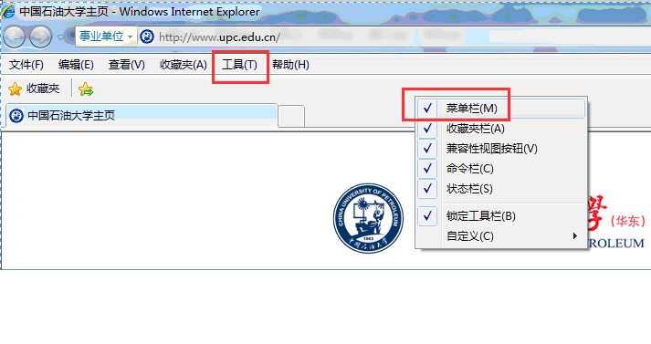

关于成绩录入异常的几点说明
各位老师，如果您在录入成绩是有“总成绩”不出现的情况（即不按照成绩设置比例，根据平时成绩、期末成绩录入变化），总是“0”分情况，可以尝试如下操作：
① 无法自动计算总成绩，即总成绩总是为0；
② 无法选择行政班级，按照正常选择班级自由录入成绩；
③ 按照学号或者姓名排序后，总是显示读取数据有误等。 如果您遇上以上类似问题，那么请进行浏览器兼容性视图设置。
情况1：对于ie9&ie10的设置：
一、兼容性视图设置
什么时候需要我这样做？！
① 无法自动计算总成绩，即总成绩总是为0；
② 无法选择行政班级，按照正常选择班级自由录入成绩；
③ 按照学号或者姓名排序后，总是显示读取数据有误等。 如果您遇上以上类似问题，那么请进行浏览器兼容性视图设置。
情况1：对于ie9&ie10的设置：
打开教务系统后（无需打开成绩录入页面），点击键盘中“F12”键；
将弹出对话框的“开发人员工具”页面中，“浏览器模式以及文本模式”修改为IE8兼容性视图，如下图。
点击红色框位置直接选择“IE8”即可，选择成功后，会显示为“浏览器模式：IE8”。选择成功后，关闭该设置页面，直接进入成绩录入模块即可。

请注意：设置完浏览器级别后，千万不要关闭并重启浏览器，只需要直接打开成绩录入界面并录入成绩即可。
打开系统自带的网页，在浏览器上方点击右键，显示“菜单栏”，可见“工具”菜单。
进入教务系统，然后点击菜单栏的工具--兼容性设置！如下图所示。
点击兼容性视图设置页面的添加按钮，或者直接将网址（upc.edu.cn）输入至“添加此网络”框中，选择“添加”，如下图所示。
添加成功，在兼容性视图页面可以看到网站网址，如下图所示，说明已经设置成功。关闭即可。


 请注意：设置完浏览器级别后，千万不要关闭并重启浏览器，只需要直接打开成绩录入界面并录入成绩即可。
请注意：设置完浏览器级别后，千万不要关闭并重启浏览器，只需要直接打开成绩录入界面并录入成绩即可。
二、其他说明
对于成绩录入时，请慎重操作“未选”等标志，特别是对于学生当前所在专业年级要求的课程（必修，或者已经选中的限选或者任选），无故不参加考试者只能是“缺考”而不是“未选“！
否则，如因选择未选提交后，才发现学生试卷等漏报、错报学生成绩等情况，请填写《成绩更改申请表》方可进行成绩二次提交。如果您采取导入方式录入成绩，请务必对每个学生期末成绩都进行触发操作（也就是利用向下箭头，使得光标从每个学生成绩都接触过),按照类似操作的结果是发现总成绩有变化后，进行暂存或者提交后方可有效。
如果您在成绩录入后，更改成绩比例或者发现总成绩总是为0，那么需要您也按照2中说明，对每个学生期末成绩都进行触发操作（也就是利用向下箭头，使得光标从每个学生成绩都接触过），按照类似操作的结果是发现总成绩有变化后，进行暂存或者提交后方可有效。